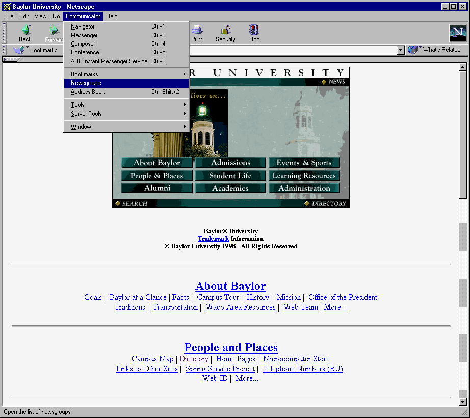
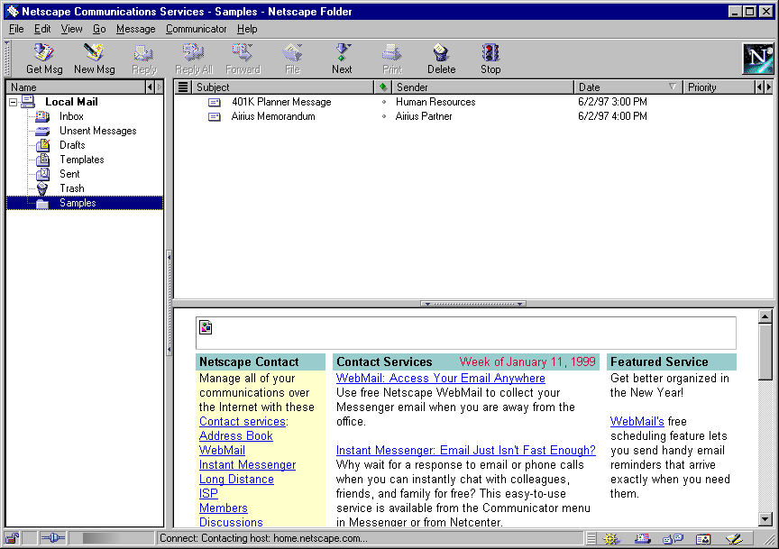
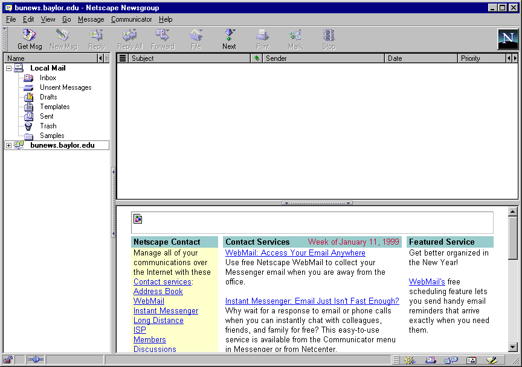
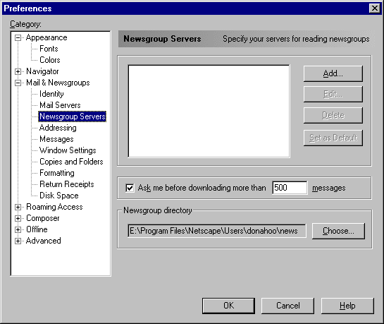
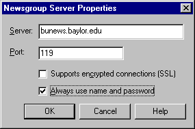
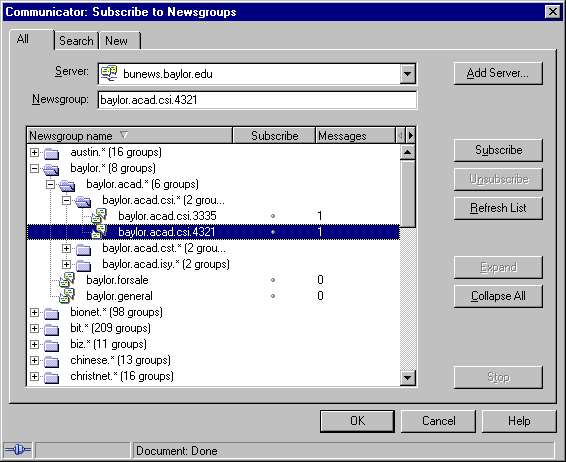
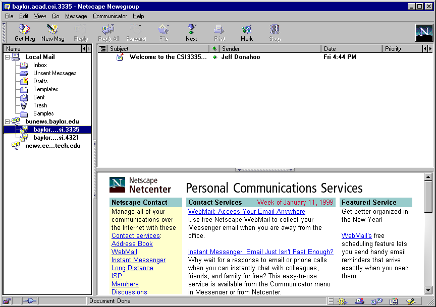

Internet Newsgroups
Ever encountered a problem and thought "I know the solution is simple. If only I could find some who has dealt with this problem before, she could answer my question in a few seconds." The problem is how to contact this ethereal person. Email will not work because...well you don't know who it is so you sure don't know their email address. The web is this giant, unfocused jumble of (semi-)interrelated information. Is there a web page that deals with your problem? Hard to tell.
The answer is (perhaps) newsgroups! Newsgroups are basically cyber coffee houses where people with common interests gather to exchange ideas. Each table in the coffee house represents a group with highly specialized interest. All you have to do is stroll into this coffee house and sit down at the table to be privy to the insight (and ramblings) of the experts (and idiots) in your interest area. Perhaps you will overhear the answer to your questions while sitting quietly at the table (reading newsgroup). If that does not work, you may speak up and ask your question to the group (posting to a newsgroup).
So how do find which table fits your needs? You're in luck! All of the tables are conveniently labeled with a sign describing its group's interests. One such table is named humanities.languages.sanskrit. Clearly, this group will discuss issues which are not of interest to the general public. That's good because if you are interested in Sanskrit you don't want to listen to people who find Hieroglyphics interesting. Note that newsgroup names are hierarchically organized by subject. The most general subject area (e.g. Humanities) is listed first. The next most general subject area (e.g. Languages) is listed next, separated by a "dot" from the first.
Well then, how do you access these wonderful islands of like-minds? All you need is a news reader. This is program that will download the comments people have posted to the newsgroup(s) in which you are interested. Many news readers exist, and they all work on the same principles. Here we describe using the Netscape news reader (specifically Communicator 4.5 under Windows), but the steps should be applicable to any news reader:

It should look like this





